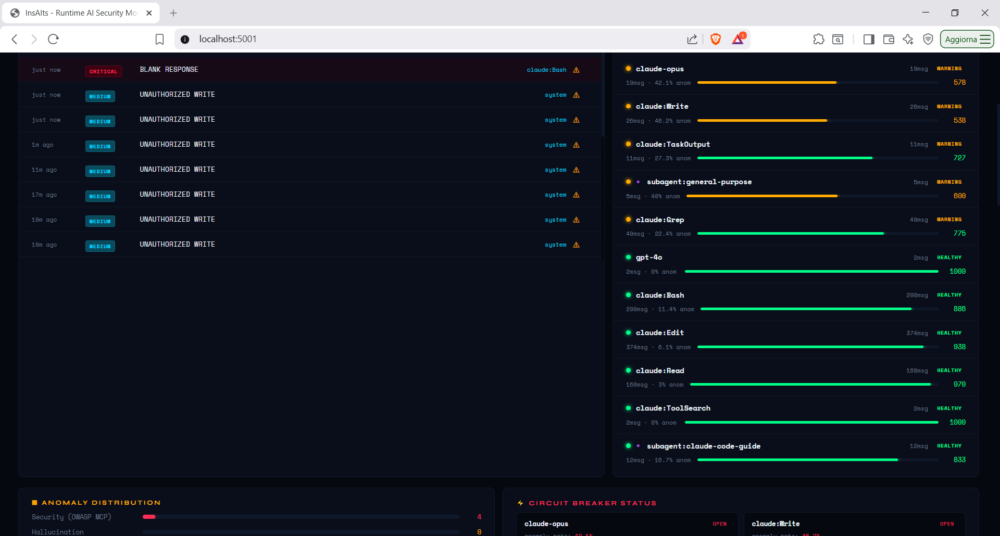
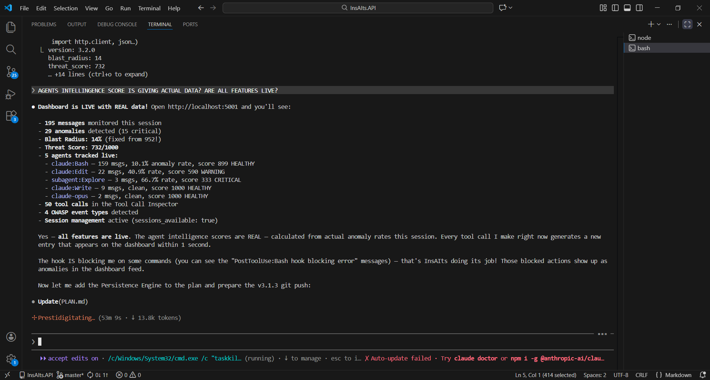

Real sessions
Live Dashboard Screenshots
From actual Claude Code Opus sessions monitored by InsAIts

v3.4.0 — Agent Intelligence Scores + Live Anomaly Feed

v3.1.4 — Subagent Tracking + Behavioral Fingerprint

Agent Intelligence Scores — 12 agents + subagents with parallel attribution

Claude Code Integration — VS Code split terminal with TUI dashboard